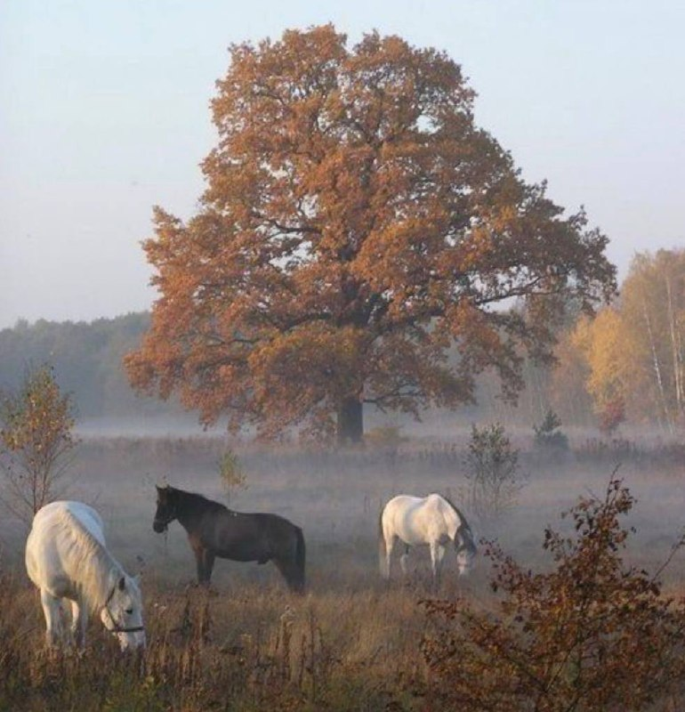
01
Общество и городская среда · событие дня

1 октября ООО «Мозаика» подало заявление о банкротстве компании в Арбитражный суд Ульяновской области.…
Победителем олимпиады стал ученик 11 класса Александр Лупий.…
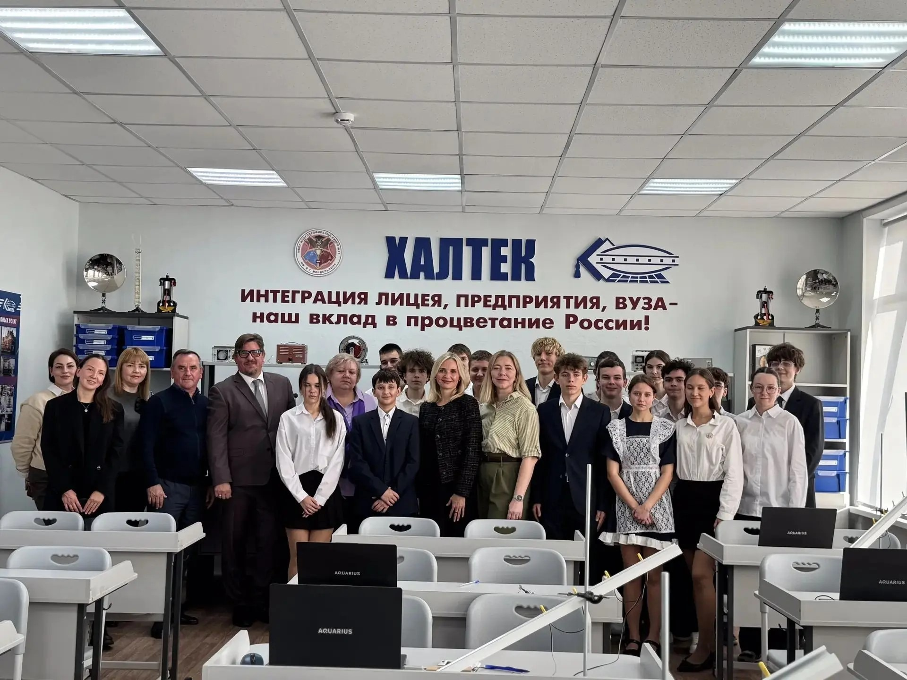
По поручению главы областного центра Александра Болдакина в городских школах, капитально отремонтированных по Президентскому национальному проекту «Молодёжь и дети», внедряются образовательные программы, востребованные на рынке труда.…
В Ульяновской области началась процедура довыборов в региональную Общественную палату.…

По поручению главы областного центра Александра Болдакина продолжается планомерная работа по приведению в порядок исторической части города.…
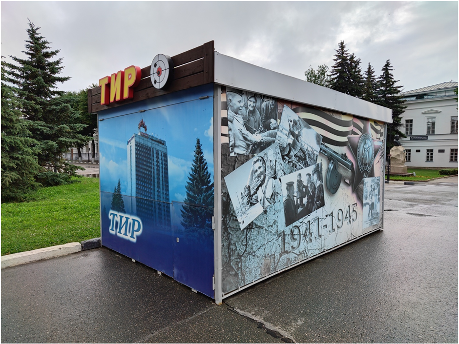
Старт нового сезона объявили на первом заседании Организационного комитета по подготовке и проведению форума «Малая родина — сила России».…

На фабрике выпускают порядка 150 наименований продукции.…
Пострадавших и повреждений имущества нет, сообщил губернатор Алексей Русских.
Министерство просвещения России подготовило проект единого образца удостоверения учителя.…
Мәскәүдә «Россия — Африка» форумы старт алды.…
Иске Кулаткы район мәдәният йортында дәүләт һәм муниципаль хезмәткәрләр өчен семинар узды.…
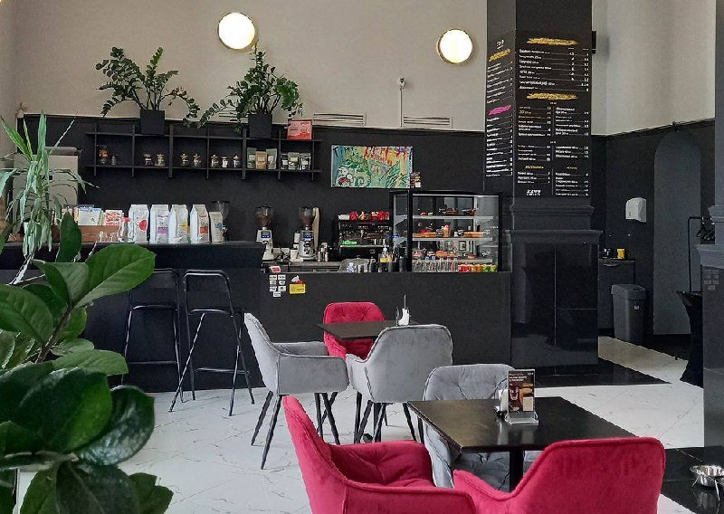
Россияне 18–24 лет стали значительно активнее интересоваться инвестициями: за девять месяцев 2026 года аудитория популярных брокерских платформ в этой возрастной группе выросла в 2,5 раза по сравнению с аналогичным периодом прошлого года.…
Московская фирма «Мозаика» требует признать МАК банкротом из-за долга в 7,6 млн рублей . К делу подключилась ФНС.…
Вместо «кипятка» в кранах течёт еле тёплая вода. При этом квитанции на оплату приходят без перерасчёта.…
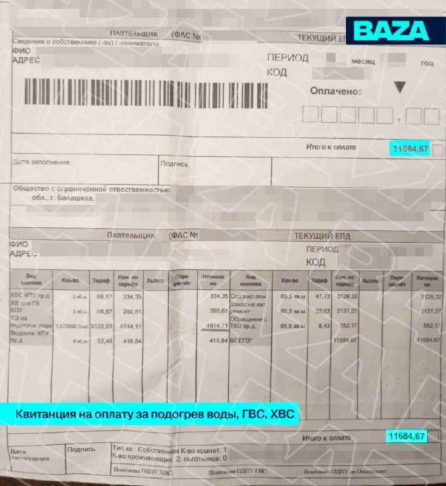
1 октября ООО «Мозаика» подало заявление о банкротстве компании в Арбитражный суд Ульяновской области.…
В Арбитражном суде Ульяновской области рассматривается дело о банкротстве ООО «Московская алкогольная компания» (МАК), связанного с производством водки «Байкал» и Nerpa.…

Фирменный двухэтажный поезд №21/22 «Ульяновск», курсирующий между Ульяновском и Москвой, за девять месяцев 2026 года перевёз более 280 тысяч пассажиров.…

Это на 10,5% больше, чем год назад, подсчитали аналитики портала "Мир квартир".…
Сегодня перед нами стоят масштабные задачи: обеспечение технологического суверенитета, развитие промышленности, создание новых рабочих мест, повышение качества жизни людей.……

Включение в реестр позволит обеспечить для этих предприятий системное сопровождение, организационную и консультативную поддержку проектов, а также содействие в привлечении новых мер господдержки.……
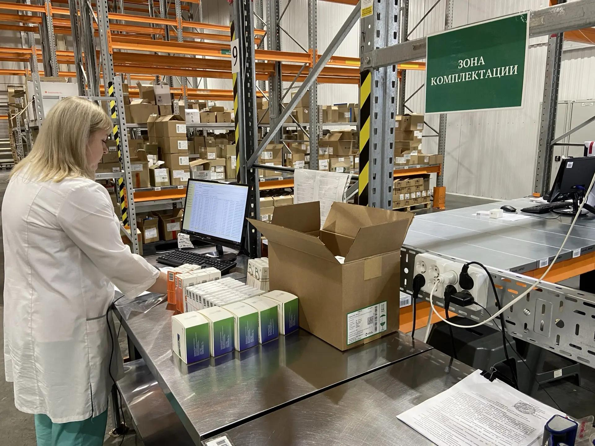
В Ульяновскую область поступила партия дорогостоящих лекарств на сумму более 17 млн рублей.…
ВПЧ — вирус, некоторые типы которого могут вызывать онкологические заболевания, в том числе рак шейки матки.
Оставить старые шины можно на специальных площадках во всех районах города: 📍 Ленинский район: пересечение улиц Верхнеполевой и Кооперативной, Юности и Ульяны Громовой ; 📍 Железнодорожный район : село Белый Ключ ; 📍 Засвияжье: проспект Олимпийский и улица Азовская ; 📍 Заволжье : пересечение улицы Жуковского и Димитровградского шоссе, проспект Врача Сурова.……
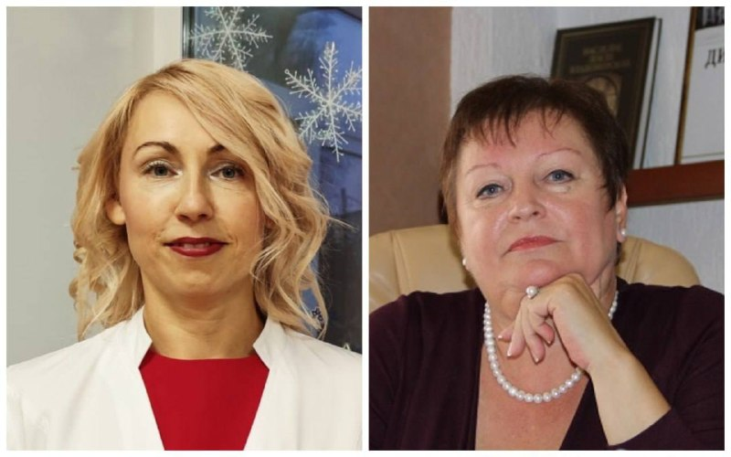
Если дали направление, то нужно быстрее все делать! Или ждут, пока болезнь перерастет,во что-то серьёзное?…
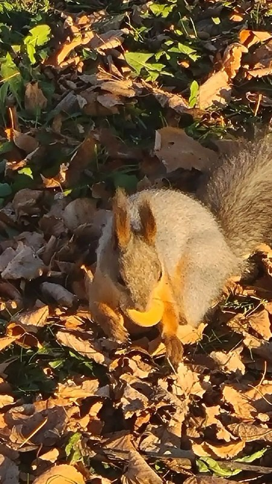
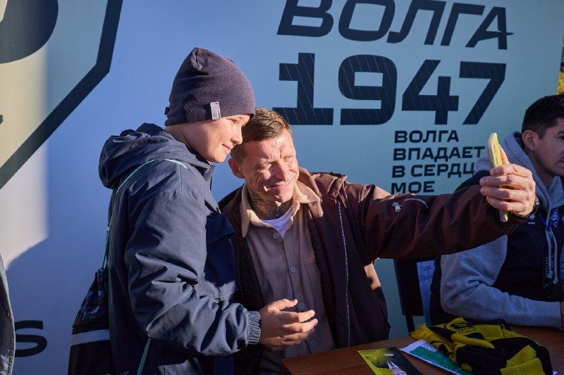
В преддверии холодов водителей призывают сменить летние шины на зимние, чтобы не допустить дорожно-транспортных происшествий.…
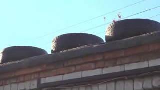
Проверка будет проводиться в тесном взаимодействии с военкоматами, в том числе в Ульяновске.…
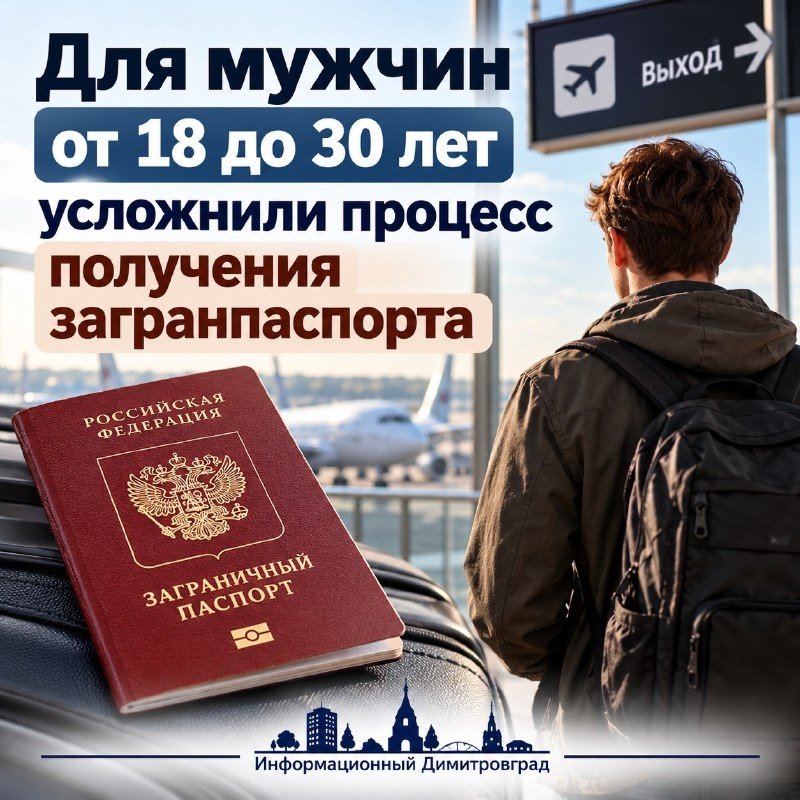
Щенка спаниеля Айзу научат искать наркотики в транспорте, помещениях и труднодоступных местах.
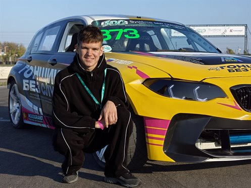
Агапова, прошёл в городе Рузаевка Мордовской Республики.…
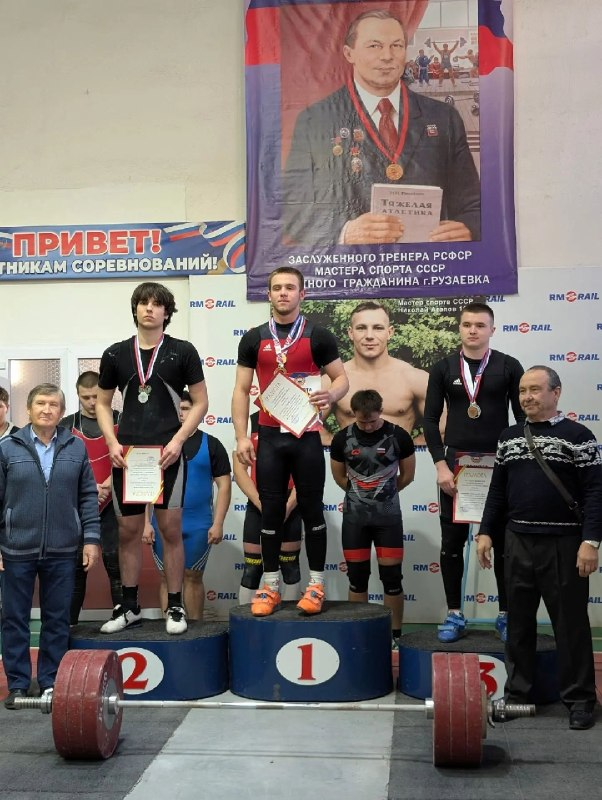
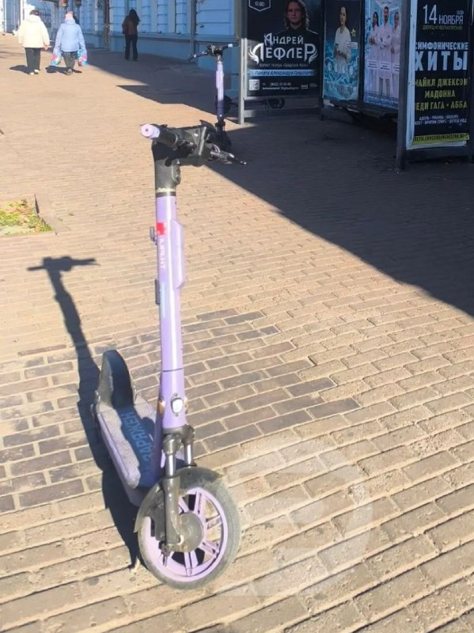
Мешают пешеходам и тем, кто уезжает/приезжает на общественном транспорте. Бескультурье пользователей мэрия обещала компенсировать рублем собственников.…
19:20 — начало проката фильма «Фьорд» — триумфатора Каннского фестиваля этого года — в СинемаПарке.…
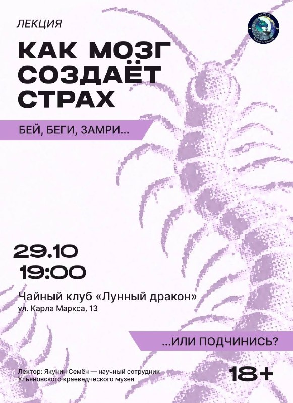
Ленина, дом 4/5 — Сонит — ЯЖЕВИ — deshkawiwi — Слушаю Молчу — Сергей Горбатин Музыканты будут располагаться в разных уголках концертного зала Только мрак и полное погружение в музыку .…
В списке редакции есть комедии, триллеры, хорроры, кино для семейного просмотра и классика мирового кинематографа.…
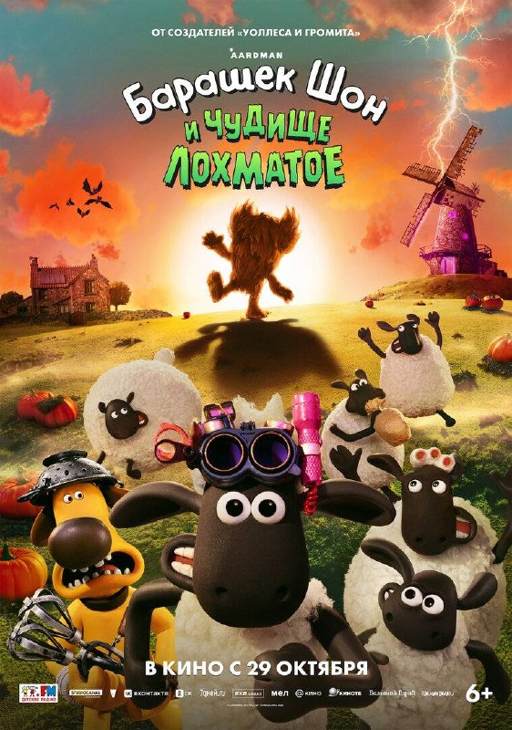
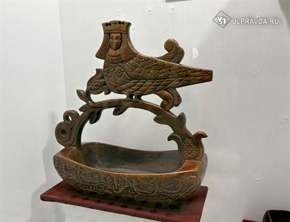
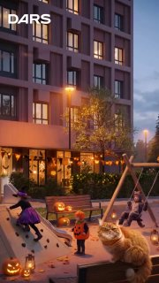
📍 Железнодорожный район ЖК «ЗАРЯ» 📍 Засвияжский район ЖК «АКВАМАРИН 2» 📍 Заволжский район ЖК «АТМОСФЕРА» ЖК «СИРЕНЕВЫЙ» В ЖК «Сиреневый» дополнительный бонус: кухня в подарок! 🎁 Никаких заклинаний и сложных ритуалов.…
Всего следствие насчитало 12 преступных эпизодов.…
С июля 2025 по февраль 2026 года на счету группировки насчитали 12 подобных эпизодов.…
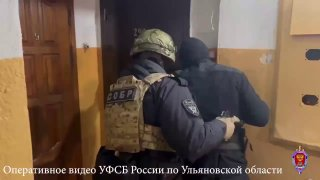
По предварительной информации, он дал указание подчиненным сотрудникам не привлекать к ответственности гражданина, нарушившего правила дорожного движения.…
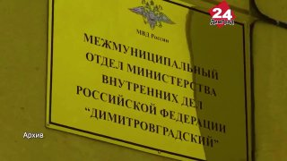
Снег выпадет по расписанию, а техника и люди — не факт. Никто не хочет в команду соколов Егорыча?
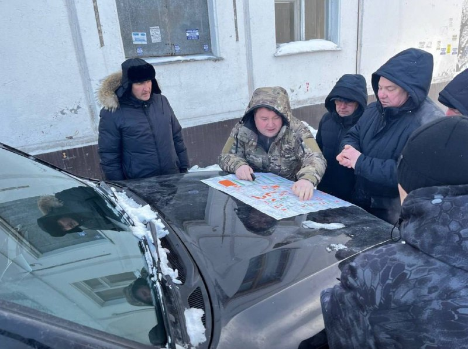
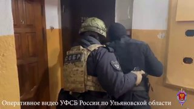
Подробности из зала суда — в материале 73online.
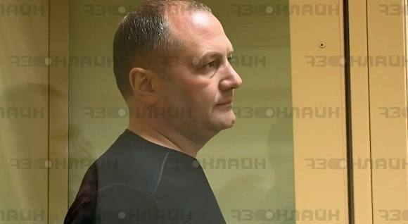
4 ст. 158, ч. 1 ст. 112, ч. 2 ст. 163 УК РФ).…
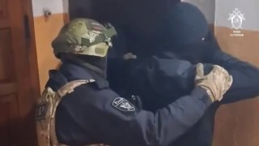
Преступная деятельность указанных лиц была пресечена УФСБ России по Ульяновской области во взаимодействии с региональными управлениями МВД, СК России при силовой поддержки Росгвардии.……
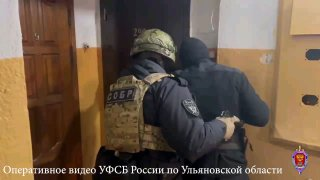

В Ульяновской области нарушения земельного законодательства выявили на площади более 37 тыс. га — это около 65% обследованных сельскохозяйственных земель.…
Владислав успешно прошел обучение в «Школе фермера», подготовил проект и выиграл грант «Агромотиватор».…
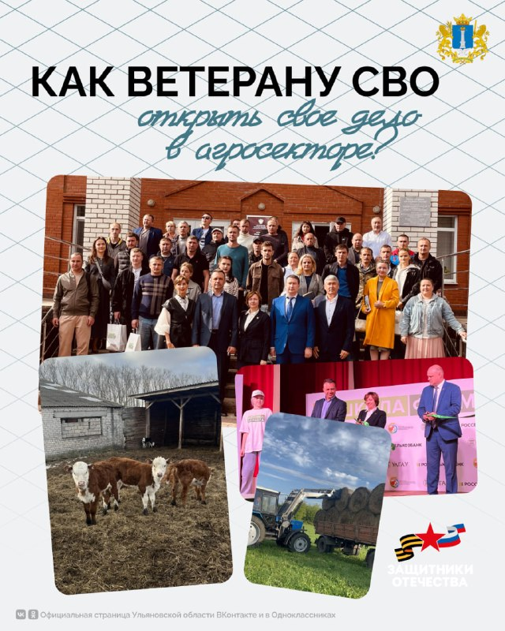
26 октября Губернатор Ульяновской области провёл рабочую встречу с директором Ульяновского регионального филиала Россельхозбанка Иваном Федосеевым.…

Повышенная активность сохранится на протяжении всего дня. Первые возмущения прогнозируются уже вечером 30 октября. Магнитная буря продлится и 1 ноября, а ко 2 ноября её интенсивность должна снизиться до 3 баллов.…
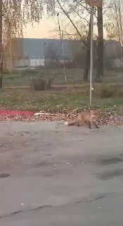
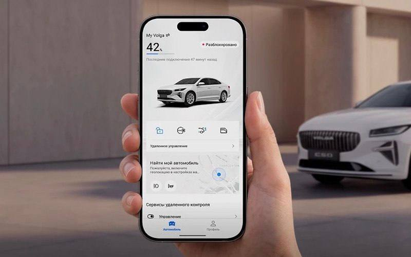
Килограмм белой икры можно купить за 500 рублей, тогда как красная к праздникам может подорожать до 35 тысяч.…
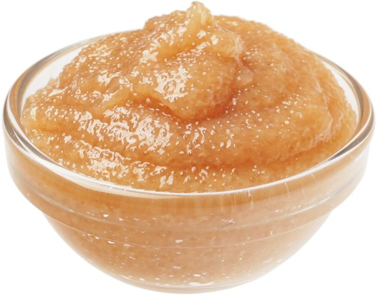
Анастасия Князькина выиграла грант в размере 600 тысяч рублей на проект «Здоровые стопы — активная жизнь».…
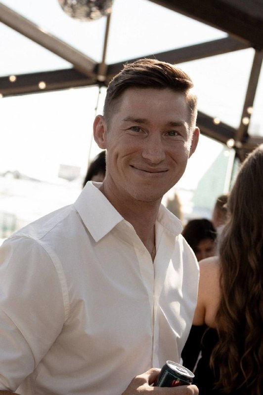
Су-57 ➡️ Новейший многофункциональный комплекс фронтовой авиации пятого поколения.…
После развернулся и поехал на светофоре на красный свет!…
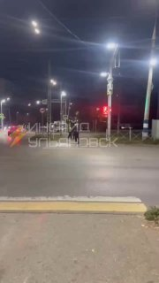
Такие данные приводит Автостат по состоянию на 1 июля 2026 года.
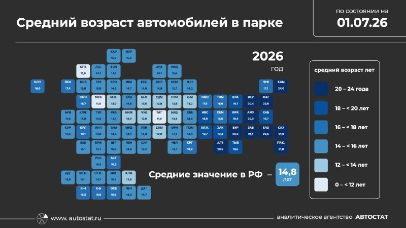
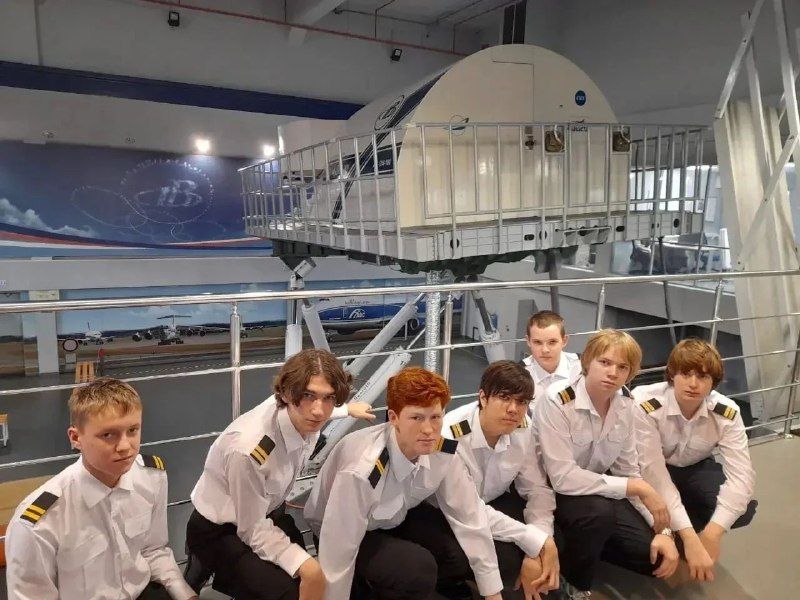
Победителем олимпиады стал ученик 11 класса Александр Лупий. Он планирует поступить в Ульяновский институт гражданской авиации и связать свою жизнь с авиацией.…
Вся «научная деятельность» свелась к банальной уголовщине: с 2022 по 2025 год Ильина выбивала из преподавателей и сотрудников начисленные премии и зарплаты, награбив 10 миллионов рублей.…
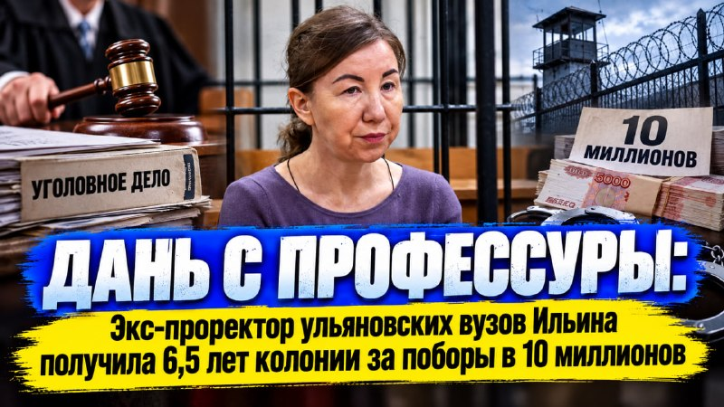
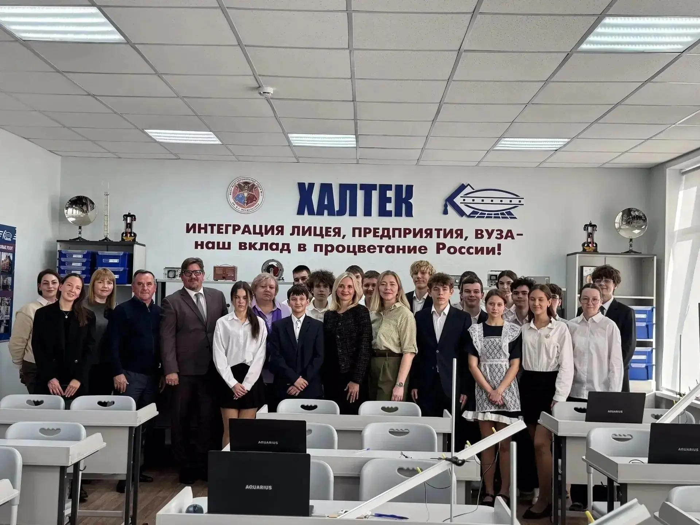
Навсегда в наших сердцах - имена комсомольцев - героев Великой Отечественной войны.…
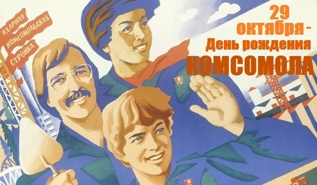
Ульяновская школа №81 имени Героя Советского Союза Дмитрия Карбышева и Чердаклинская школа №2 получили благодарности Министерства образования Республики Беларусь за активное участие и сотрудничество в рамках Ассоциации школ России и Белоруссии.…
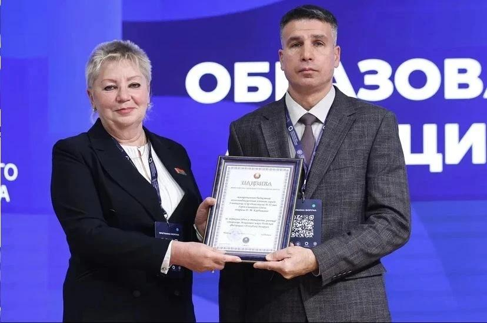
Соперниками станут участники из Вологды, Новосибирска, Красноярска и Москвы.…

В рамках образовательного проекта «Патриоты Отечества» состоялась видеоконференция среди обучающихся профильных кадетских классов СК России из Ульяновска, Канаша и Казани по модулю «Мой выбор – Следственный комитет Российской Федерации».…

Соперники — из Вологды, Новосибирска, Красноярска и Москвы. Рискнёт ли Матвей положить на тарелку что-то исконно симбирское?
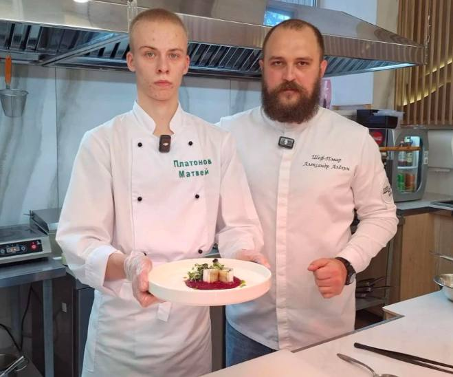
На сцене районного Дома культуры состоялась премьера спектакля-дискуссии «Один», подготовленная школьным театром «KinderART».…
Для граждан СССР это не просто красный день календаря, а тёплое воспоминание о времени, когда всё только начиналось: первые стройотряды, собрания, комсомольские билеты, романтика дружбы, песни у костра и первые свершения.…
| Тема | Завтра | Ожидание | Уверенность |
|---|---|---|---|
| Спорт | ↓ спад | ~14.7 упоминаний | средняя |
| БПЛА и воздушные угрозы | ↓ спад | ~25.1 упоминаний | средняя |
| Культура и туризм | ↓ спад | ~9.6 упоминаний | средняя |
| Городская среда | ↓ спад | ~18.2 упоминаний | средняя |
| Авиапром / УКБП / Ил-114 | ↓ спад | ~5.5 упоминаний | средняя |
| Школы и вузы | ↓ спад | ~20.0 упоминаний | средняя |